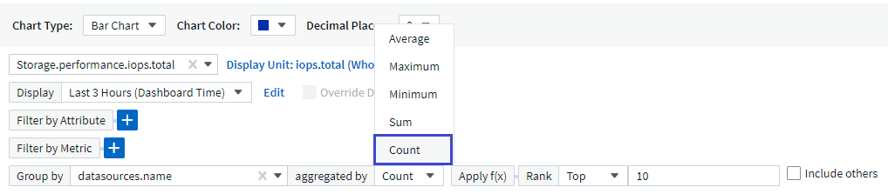
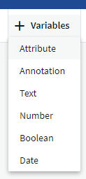
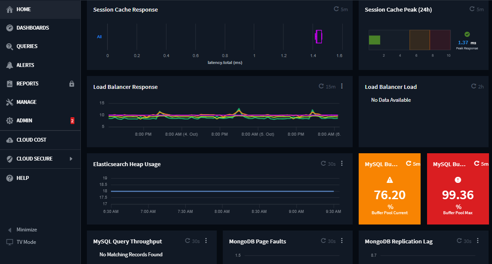
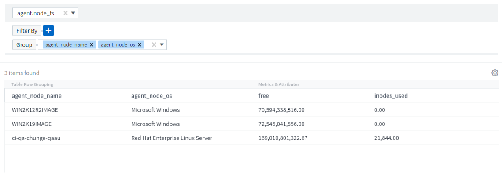
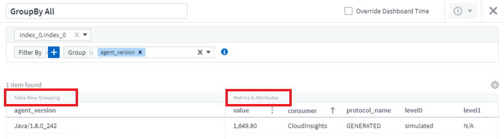
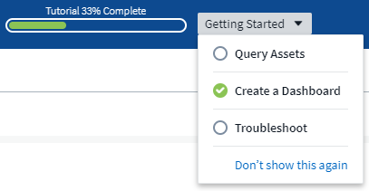

Richiedi modifiche alla documentazione
Richiedi modifiche alla documentazione Modifica questa pagina
Modifica questa pagina Scopri come collaborare
Scopri come collaborareNovità di Cloud Insights
Collaboratori

- Maggio 2023
- Aprile 2023
- Kubernetes Performance Monitoring and Map (monitoraggio e mappa delle performance di Kubernetes)
- Dashboard di sicurezza di ONTAP Essentials
- Recuperare lo storage a freddo ONTAP
- Subscription Notification controlla anche i messaggi banner
- Il reporting ha un nuovo look
- Monitor in pausa per impostazione predefinita
- Stai cercando la scheda API Metering (misurazione API)?
- Marzo 2023
- Gennaio 2023
- Dicembre 2022
- Esplora la protezione ransomware e altre funzionalità di sicurezza durante la versione di prova di Cloud Insights
- I carichi di lavoro di Kubernetes dispongono di una landing page personalizzata
- Controlla i checksum
- Miglioramenti di Log Alerting
- 11 nuovi monitor ONTAP predefiniti che coprono SnapMirror per la business continuity
- Novembre 2022
- Ottobre 2022
- Settembre 2022
- Agosto 2022
- Cloud Insights ha un nuovo look!
- Non sai da dove iniziare? Scopri gli elementi essenziali di ONTAP!
- Le famiglie di dati di storage vengono unite
- Quanta energia utilizza lo storage?
- Funzionalità graduate da Preview
- Qual è lo stato di salute della raccolta dati?
- Rinnovo automatico dei token API
- Basic Edition offre molto di più
- Sei pronto per saperne di più?
- Supporto del sistema operativo
- Giugno 2022
- Maggio 2022
- Aprile 2022
- Marzo 2022
- Febbraio 2022
- Dicembre 2021
- Novembre 2021
- Ottobre 2021
- Settembre 2021
- Agosto 2021
- Giugno 2021
- Suggerimenti di completamento automatico, caratteri jolly ed espressioni in filtri
- API disponibili per edizione
- Kubernetes visibilità PV e Pod
- Collegamenti tra nodo e VM di Kubernetes
- Alert Monitor sostituisce le policy di performance
- Cloud Secure supporta NFS
- Eliminazione dello snapshot Cloud Secure
- Velocità di raccolta dei dati Cloud Secure
- Maggio 2021
- Aprile 2021
- Febbraio 2021
- Gennaio 2021
- Dicembre 2020
- Novembre 2020
- Ottobre 2020
- Settembre 2020
- Agosto 2020
- Luglio 2020
- Cloud Secure fare un’istantanea azione
- Aggiornamenti metriche/contatori
- Rilevamento di potenziali attacchi Cloud Secure
- Iscriviti alla Premium Edition tramite AWS
- Widget tabella avanzato
- Filtraggio delle metriche
- Dati avanzati del contatore ONTAP
- Dashboard contatori avanzati
- Scopri di più
- Menu politiche e violazioni
- Aggiornato Telegraf Agent
- Giugno 2020
- Maggio 2020
- Aprile 2020
- Febbraio 2020
- Gennaio 2020
- Dicembre 2019
- Novembre 2019
- Ottobre 2019
- Settembre 2019
- Agosto 2019
- Luglio 2019
- Giugno 2019
- Maggio 2019
- Aprile 2019
- Marzo 2019
- Febbraio 2019
- Gennaio 2019
- Dicembre 2018
- Novembre 2018
NetApp continua a migliorare e migliorare i propri prodotti e servizi. Di seguito sono riportate alcune delle funzionalità più recenti disponibili nelle edizioni commerciali di Cloud Insights.

|
Alcune di queste funzionalità potrebbero non essere disponibili nell’edizione federale di Cloud Insights o potrebbero essere disponibili con funzionalità ridotte. Laddove possibile, queste differenze sono annotate nella documentazione. |
Maggio 2023
Installazione migliorata dell’operatore di monitoraggio Kubernetes
Installazione e configurazione di "NetApp Kubernetes Monitoring Operator" è più semplice che mai grazie ai seguenti miglioramenti:
-
Ambiente "impostazioni di configurazione" sono contenuti in un singolo file di configurazione autodotarato.
-
Istruzioni dettagliate per caricare le immagini dell’operatore di monitoraggio Kubernetes nel repository privato.
-
Semplice da aggiornare con un singolo comando per aggiornare il monitoraggio Kubernetes mantenendo le configurazioni personalizzate.
-
Più sicuro: Le chiavi API gestiscono in modo sicuro i segreti.
-
Facile da integrare e implementare con i tool di automazione ci/CD.
Virtualizzazione dello storage
Cloud Insights è in grado di distinguere tra un array di storage con storage locale o virtualizzazione di altri array di storage. In questo modo è possibile correlare i costi e distinguere le performance dal front-end fino al back-end dell’infrastruttura.

Nuovi parametri Webhook
Quando si crea un "Webhook" notifica, ora puoi includere questi parametri nella definizione di webhook:
-
%%TriggeredOnKeys%%
-
%%TriggeredOnValues%%
Creazione di report sui dati Kubernetes
Cloud Insights è ora in grado di creare report su tutti i dati Kubernetes, inclusi PV, PVC, workload, cluster e namespace.
I dati Kubernetes raccolti da Cloud Insights, inclusi volumi persistenti (PV), PVC, carichi di lavoro, cluster e namespace, sono ora disponibili per l’utilizzo in Reporting, che consente chargeback, trend, previsioni, calcoli TTF, E altri report aziendali sulle metriche per Kubernetes.
Monitor di sistema ONTAP predefiniti abilitati per i nuovi clienti
Molti monitor di sistema ONTAP sono abilitati (ad esempio ripresa) per impostazione predefinita nei nuovi ambienti Cloud Insights. In precedenza, la maggior parte dei monitor era in stato di default Paused. Poiché le esigenze di business variano da azienda a azienda, consigliamo sempre di dare un’occhiata a "monitor di sistema" nel tuo ambiente e mettere in pausa o riprendere ciascuno in base alle tue esigenze di avviso.
Aprile 2023
Kubernetes Performance Monitoring and Map (monitoraggio e mappa delle performance di Kubernetes)
Il "Kubernetes Network Performance and Map" Semplifica la risoluzione dei problemi mappando le dipendenze tra i carichi di lavoro di Kubernetes. Fornisce visibilità in tempo reale sulle latenze e sulle anomalie delle performance di rete di Kubernetes per identificare i problemi di performance prima che influiscano sugli utenti. Questa funzionalità aiuta le organizzazioni a ridurre i costi complessivi analizzando e revisionando i flussi di traffico Kubernetes.
Caratteristiche principali: • La mappa del carico di lavoro presenta le dipendenze e i flussi dei carichi di lavoro di Kubernetes e evidenzia i problemi di rete e di performance. • Monitora il traffico di rete tra pod, carichi di lavoro e nodi Kubernetes; identifica l’origine dei problemi di traffico e latenza. • Riduci i costi complessivi analizzando il traffico di rete in entrata, in uscita, cross-region e cross-zone.
Mappa del carico di lavoro che mostra i dettagli "Slideout":

Kubernetes Performance Monitoring and Map è disponibile come "Anteprima" funzione.
Dashboard di sicurezza di ONTAP Essentials
Il "Dashboard di sicurezza" fornisce una vista istantanea della situazione di sicurezza corrente, mostrando grafici per la crittografia dei volumi hardware e software, lo stato anti-ransomware e i metodi di autenticazione del cluster. Il dashboard di sicurezza è disponibile come "Anteprima" funzione.

Recuperare lo storage a freddo ONTAP
L’analisi di recupero dello storage a freddo ONTAP fornisce dati sulla capacità a freddo, sui potenziali risparmi di costi/energia e sulle azioni consigliate per i volumi sui sistemi ONTAP.

Con questa Insight, puoi rispondere a domande come:
-
Quale quantità di dati cold in un cluster di storage si trova su (a) dischi SSD ad alto costo, (b) dischi HDD e (c) dischi virtuali?
-
Quali carichi di lavoro contribuiscono maggiormente allo storage non ottimizzato?
-
Qual è la durata (in giorni) in cui i dati sono stati cold su un determinato carico di lavoro?
Recuperare lo storage a freddo ONTAP è considerato un "Anteprima" ed è pertanto soggetto a modifiche.
Subscription Notification controlla anche i messaggi banner
L’impostazione dei destinatari per le notifiche di abbonamento (Admin > Notifiche) ora controlla anche chi vedrà le notifiche di banner in-product relative all’abbonamento.
Il reporting ha un nuovo look
Si noterà che le schermate dei report di Cloud Insights hanno un nuovo aspetto e che alcune delle opzioni di navigazione del menu sono state modificate. Queste schermate e le modifiche di navigazione sono state aggiornate nella versione corrente "Documentazione di reporting".

Monitor in pausa per impostazione predefinita
Per i nuovi ambienti Cloud Insights, tenere presente questo "monitor definiti dal sistema" non inviare notifiche di avviso per impostazione predefinita. È necessario attivare le notifiche per qualsiasi monitor che si desidera venga avvisato, aggiungendo uno o più metodi di erogazione per il monitor. Per gli ambienti Cloud Insights esistenti, l’elenco predefinito dei destinatari delle notifiche globali è stato rimosso per tutti i monitor definiti dal sistema attualmente in stato di pausa. Le notifiche definite dall’utente rimangono invariate, così come le impostazioni di notifica per i monitor definiti dal sistema attualmente attivi.
Stai cercando la scheda API Metering (misurazione API)?
API Metering è stato spostato dalla pagina Subscription (abbonamento) alla pagina Admin > API Access (Amministratore > accesso API).
Marzo 2023
Connessione cloud per ONTAP 9.9+ obsoleta
La connessione cloud per il data collector ONTAP 9.9+ è obsoleta. A partire dal 4 aprile 2023, i data collutori di Cloud Connection nel tuo ambiente non raccoglieranno più dati e presenteranno invece un errore durante il polling. Il data collector connessione cloud verrà rimosso completamente da Cloud Insights in un aggiornamento successivo.
Prima del 4 aprile 2023, è obbligatorio configurare un nuovo data collector per il software di gestione dei dati NetApp ONTAP per tutti i sistemi ONTAP attualmente raccolti da Cloud Connection. "Scopri di più".
Gennaio 2023
Nuovi monitor di log
Abbiamo aggiunto quasi due dozzine "monitor di sistema aggiuntivi" per avvisare in caso di collegamenti di interconnessione interrotti, problemi heartbeat e altro ancora. Inoltre, sono stati aggiunti tre nuovi monitor di log per la protezione dei dati, per avvisare sulle modifiche apportate a SnapMirror: Risincronizzazione automatica, mirroring MetroCluster e risincronizzazione FabricPool.
Alcuni di questi monitor saranno abilitati per impostazione predefinita; è necessario mettere in pausa se non si desidera ricevere avvisi. Si noti inoltre che questi monitor non sono configurati per inviare notifiche; è necessario configurare i destinatari delle notifiche su questi monitor se si desidera inviare avvisi via email o webhook.
Esportazione .CSV per tutti i widget della tabella Dashboard
Garantire l’accessibilità ai tuoi dati è essenziale, per cui abbiamo effettuato l’esportazione in formato .CSV disponibile per tutte le query metriche, i widget della tabella della dashboard e le landing page degli oggetti, indipendentemente dal tipo di dati (risorsa o integrazione) che si sta interrogando.
Le personalizzazioni dei dati, come la selezione delle colonne, la ridenominazione delle colonne e le conversioni delle unità, sono ora incluse nella nuova funzionalità di esportazione.
Dicembre 2022
Esplora la protezione ransomware e altre funzionalità di sicurezza durante la versione di prova di Cloud Insights
A partire da oggi, iscrivendoti alla nuova versione di prova di Cloud Insights potrai esplorare le funzionalità di sicurezza come il rilevamento ransomware e la policy di risposta automatica per il blocco degli utenti. Se non ti sei iscritto alla versione di prova, puoi farlo oggi stesso!
I carichi di lavoro di Kubernetes dispongono di una landing page personalizzata
I carichi di lavoro sono una parte chiave del tuo ambiente Kubernetes, quindi Cloud Insights ora fornisce le landing page per questi carichi di lavoro. Da qui puoi visualizzare, esplorare e risolvere i problemi che influiscono sui carichi di lavoro Kubernetes.

Controlla i checksum
Ci hai chiesto di fornirti i valori checksum durante l’installazione dell’agente per Windows e Linux e pensiamo che sia un’ottima idea. Ecco quindi:

Miglioramenti di Log Alerting
Raggruppa per
Quando si crea o si modifica un Log Monitor, è ora possibile impostare gli attributi "Group by" (Raggruppa per) per consentire avvisi più mirati. Cercare gli attributi "Group by" (Raggruppa per) sotto le impostazioni "Filter" (filtro) nella definizione del monitor.

Questa modifica consente ai monitor metrici e ai monitor di log di ottenere la parità delle funzioni normalizzando l’aspetto "Group by" (Raggruppa per) delle definizioni dei monitor. Questa parità consentirà ai clienti di clonare/duplicare tutti i monitor predefiniti definiti dal sistema per un’ulteriore personalizzazione.
Duplicazione
È ora possibile clonare (duplicare) i monitor Change Log, Kubernetes Log e Data Collector Log. In questo modo viene creato un nuovo monitor di log personalizzato che è possibile modificare in base alle definizioni specifiche.

11 nuovi monitor ONTAP predefiniti che coprono SnapMirror per la business continuity
Abbiamo aggiunto quasi una dozzina di novità "monitor di sistema" Per SnapMirror for Business Continuity (SMBC), che avvisa in caso di modifiche ai certificati SMBC e ai mediatori ONTAP.
Novembre 2022
Più di 40 nuovi monitor di sicurezza, raccolta dati e CVO!
Abbiamo aggiunto decine di nuovi monitor definiti dal sistema per avvisarti di potenziali problemi con Cloud Volumes, sicurezza e protezione dei dati. Scopri di più su questi monitor "qui".
Ottobre 2022
Rilevamento ransomware migliore e più accurato con l’integrazione della protezione ransomware autonoma di ONTAP
Cloud Secure migliora il rilevamento ransomware attraverso l’integrazione con ONTAP "Protezione ransomware autonoma" (ARP).
Cloud Secure riceve gli eventi ARP di ONTAP sulla potenziale attività di crittografia dei file di volume, e.
-
Correla gli eventi di crittografia dei volumi con l’attività dell’utente per identificare chi causa il danno,
-
Implementa policy di risposta automatica per bloccare l’attacco,
-
Identifica i file interessati, contribuendo a ripristinarli più rapidamente e a condurre indagini sulle violazioni dei dati.
Settembre 2022
Monitor disponibili nell’edizione di base
ONTAP "Monitor predefiniti" Ora disponibile per l’utilizzo nell’edizione di base di Cloud Insights. Questo include oltre 70 monitor dell’infrastruttura e 30 esempi di workload.
Dashboard di alimentazione e StorageGRID di ONTAP
La galleria del dashboard include una nuova dashboard per l’alimentazione e la temperatura ONTAP e quattro dashboard per StorageGRID. Se il tuo ambiente sta raccogliendo metriche di alimentazione ONTAP e/o dati StorageGRID, importa queste dashboard selezionando +dalla galleria.
Visibilità della soglia immediata nelle tabelle
La formattazione condizionale consente di impostare ed evidenziare le soglie di livello di avviso e critico nei widget delle tabelle, offrendo visibilità istantanea agli outlier e ai punti dati eccezionali.

Security Monitor
Cloud Insights può avvisare l’utente quando rileva che la modalità FIPS è disattivata sul sistema ONTAP. Scopri di più "Monitor di sistema"E guarda questo spazio per altri Security Monitor, presto disponibili!
Chat ovunque
Chatta con uno specialista del supporto NetApp da qualsiasi schermata Cloud Insights selezionando il nuovo collegamento Guida > Chat live. La guida è disponibile nella sezione "?" nella parte superiore destra dello schermo.

Approfondimenti più visibili
Se l’ambiente in uso sta riscontrando un "Insight" Ad esempio risorse condivise sotto stress o Kubernetes Namespace che stanno esaurendo lo spazio, le landing page delle risorse interessate ora includono collegamenti alla Insight stessa, che consentono un’esplorazione e un troubleshooting più rapidi.
Nuovi Data Collector
-
Amazon S3 (disponibile in anteprima)
-
Brocade FOS 9.0.x
-
Dell/EMC PowerStore 3.0.0.0
Altri aggiornamenti di Data Collector
Tutte le origini dati sono ora ottimizzate per riprendere il polling delle performance dopo gli aggiornamenti e/o le patch dell’unità di acquisizione.
Supporto del sistema operativo
Oltre a questi, le unità di acquisizione Cloud Insights supportano i seguenti sistemi operativi "già supportato":
-
Red Hat Enterprise Linux 8.5, 8.6
Agosto 2022
Cloud Insights ha un nuovo look!
A partire da questo mese, "Monitor and Optimize" è stato rinominato Observability. Qui troverai tutte le tue funzionalità preferite, come dashboard, query, avvisi e report. Inoltre, cercare Cloud Secure nel nuovo menu sicurezza. Si noti che solo i menu sono stati modificati; la funzionalità delle funzioni rimane invariata.

Cerchi il menu Help?
La guida ora si trova nella parte superiore destra dello schermo.

Non sai da dove iniziare? Scopri gli elementi essenziali di ONTAP!
"Elementi essenziali di ONTAP" È un insieme di dashboard e flussi di lavoro che offre viste dettagliate degli inventari, dei carichi di lavoro e della protezione dei dati di NetApp ONTAP, incluse previsioni da giorni a completi per capacità e performance dello storage. Puoi anche vedere se alcuni controller sono in esecuzione con un utilizzo elevato. ONTAP Essentials è il posto ideale per tutte le tue esigenze di monitoraggio di NetApp ONTAP.
ONTAP Essentials, disponibile in tutte le edizioni, è progettato per essere intuitivo per gli operatori e gli amministratori ONTAP esistenti, semplificando la transizione da ActiveIQ Unified Manager a tool di gestione basati sui servizi.

Le famiglie di dati di storage vengono unite
Hai chiesto e ora CE l’hai. Le unità dati di base 2 e 10 di storage sono ora combinate in un’unica famiglia, da bit e byte a tebbit e terabyte, semplificando la visualizzazione dei dati nelle dashboard. I data rate sono ora anche una grande famiglia di prodotti.

Quanta energia utilizza lo storage?
Visualizza e monitora il tuo shelf di storage ONTAP e il consumo energetico del nodo, la temperatura e la velocità della ventola utilizzando le metriche netapp_ontap.storage_shelf, netapp_ontap.system_node e netapp_ontap.cluster (solo consumo di energia).

Funzionalità graduate da Preview
Le seguenti funzionalità sono state spostate da Anteprima e sono ora disponibili per tutti i clienti:
Funzione |
Descrizione |
Kubernetes Namespace che esauriscono lo spazio |
L’Insight Kubernetes Namespace running of Space ti offre una vista dei carichi di lavoro degli spazi dei nomi Kubernetes che rischiano di esaurire lo spazio, con una stima del numero di giorni rimanenti prima che ogni spazio si esaurisca."Scopri di più" |
Risorsa condivisa sotto stress |
L’Insight di Shared Resource Under stress utilizza ai/ML per identificare automaticamente dove il conflitto di risorse sta causando il degrado delle performance nel tuo ambiente, evidenzia i carichi di lavoro interessati dall’IT e fornisce le azioni consigliate per risolvere i problemi di performance più rapidamente."Scopri di più" |
Cloud Secure: Blocca l’accesso degli utenti in caso di attacco |
Maggiore protezione dei dati business-critical con la possibilità di bloccare l’accesso degli utenti quando viene rilevato un attacco. L’accesso può essere bloccato automaticamente, utilizzando le policy di risposta automatizzate o manualmente dalle pagine degli avvisi o dei dettagli dell’utente."Scopri di più" |
Qual è lo stato di salute della raccolta dati?
Cloud Insights offre due nuovi monitor heartbeat per le unità di acquisizione, oltre a due monitor per avvisare in caso di guasti del data collector. Questi possono essere utilizzati per avvisare rapidamente i clienti in caso di problemi di raccolta dei dati.
I seguenti monitor sono ora disponibili nel gruppo di monitor Data Collection:
-
Unità di acquisizione: Heartbeat-critical
-
Heartbeat unità di acquisizione - Avviso
-
Collector non riuscito
-
Avviso di raccolta
Si noti che questi monitor sono in stato Paused per impostazione predefinita. Attivarli per essere avvisati in caso di problemi di raccolta dei dati.
Rinnovo automatico dei token API
È ora possibile impostare i token di accesso API per il rinnovo automatico. Attivando questa funzione, i token di accesso API nuovi/aggiornati verranno generati automaticamente per i token in scadenza. Gli agenti Cloud Insights che utilizzano un token in scadenza verranno aggiornati automaticamente per utilizzare il corrispondente token di accesso API nuovo/aggiornato, consentendo loro di continuare a funzionare senza problemi. Quando crei il token, seleziona la casella "Rinnova automaticamente il token". Questa funzione è attualmente supportata dagli agenti Cloud Insights in esecuzione sulla piattaforma Kubernetes con l’ultimo operatore di monitoraggio di NetApp Kubernetes.
Basic Edition offre molto di più
La versione di prova è terminata, ma non sei ancora sicuro se un abbonamento è adatto a te? L’edizione di base ti ha sempre dato la possibilità di continuare a utilizzare Cloud Insights con il tuo attuale data collector ONTAP, ma ora puoi continuare a catturare anche la versione, la topologia e i dati IOPS/throughput/latenza di VMware. I clienti NetApp con supporto Premium sui propri sistemi storage avranno diritto al supporto per Cloud Insights.
Sei pronto per saperne di più?
Consulta la sezione Learning Center della pagina Guida > supporto per i link alle offerte dei corsi NetApp University Cloud Insights.
Supporto del sistema operativo
Oltre a questi, le unità di acquisizione Cloud Insights supportano anche il seguente sistema operativo "già supportato":
-
Windows 11
Giugno 2022
Kubernetes saturazione del cluster e altri dettagli
Cloud Insights semplifica l’esplorazione dell’ambiente Kubernetes con una pagina dei dettagli del cluster migliorata che fornisce dettagli sulla saturazione e una vista più pulita degli spazi dei nomi e dei carichi di lavoro.

La pagina dell’elenco dei cluster offre inoltre una rapida visualizzazione della saturazione, oltre ai conteggi di nodi, Pod, namespace e workload:

Quanti anni ha il tuo cluster Kubernetes?
Il tuo cluster sta iniziando solo nel mondo o ha vissuto una lunga vita digitale? Age è stato aggiunto come metrica temporale raccolta per i nodi Kubernetes.

Previsione del time-to-full della capacità
Cloud Insights fornisce un dashboard per prevedere il numero di giorni fino allo scadere della capacità per ogni volume interno monitorato. Questi valori possono contribuire a ridurre significativamente il rischio di un’interruzione.

I contatori TTF sono disponibili anche per Storage, Storage Pool e Volume. Continua a guardare questo spazio per ulteriori dashboard per questi oggetti.
Si noti che le previsioni Time-to-Full stanno per uscire da Preview e verranno implementate a tutti i clienti.
Cosa è cambiato nel mio ambiente?
Le voci del registro delle modifiche ONTAP possono essere visualizzate in esplora log.

Supporto del sistema operativo
Oltre a questi, le unità di acquisizione Cloud Insights supportano i seguenti sistemi operativi "già supportato":
-
CentOS Stream 9
-
Windows 2022
Aggiornato Telegraf Agent
L’agente per l’acquisizione dei dati di integrazione di telegraf è stato aggiornato alla versione 1.22.3, con miglioramenti in termini di performance e sicurezza. Gli utenti che desiderano eseguire l’aggiornamento possono fare riferimento alla sezione relativa all’aggiornamento appropriata di "Installazione dell’agente" documentazione. Le versioni precedenti dell’agente continueranno a funzionare senza richiedere alcuna azione da parte dell’utente.
Funzioni di anteprima
Cloud Insights evidenzia regolarmente una serie di nuove interessanti funzionalità di anteprima. Se si desidera visualizzare l’anteprima di una o più di queste funzioni, contattare il "Team di vendita NetApp" per ulteriori informazioni.
Funzione |
Descrizione |
Kubernetes Namespace che esauriscono lo spazio |
L’Insight Kubernetes Namespace running of Space ti offre una vista dei carichi di lavoro degli spazi dei nomi Kubernetes che rischiano di esaurire lo spazio, con una stima del numero di giorni rimanenti prima che ogni spazio si esaurisca."Scopri di più" |
Cloud Secure: Blocca l’accesso degli utenti in caso di attacco |
Maggiore protezione dei dati business-critical con la possibilità di bloccare l’accesso degli utenti quando viene rilevato un attacco. L’accesso può essere bloccato automaticamente, utilizzando le policy di risposta automatica o manualmente dalle pagine degli avvisi o dei dettagli dell’utente."Scopri di più" |
Risorsa condivisa sotto stress |
L’Insight di Shared Resource Under stress utilizza ai/ML per identificare automaticamente dove il conflitto di risorse sta causando il degrado delle performance nel tuo ambiente, evidenzia i carichi di lavoro interessati dall’IT e fornisce le azioni consigliate per risolvere i problemi di performance più rapidamente."Scopri di più" |
Maggio 2022
Chat live con il supporto NetApp
Ora puoi chattare in diretta con il personale del supporto NetApp! Nella pagina Help > Support (Guida > supporto tecnico), fare clic sull’icona Chat o fare clic su Chat nella sezione "Contact US" (Contattaci) per avviare una sessione di chat. Il supporto via chat è disponibile nei giorni feriali USA per gli utenti Standard e Premium Edition.

Operatore Kubernetes
Abbiamo reso più semplice l’installazione e l’esecuzione con il monitoraggio avanzato di Kubernetes e cluster explorer di Cloud Insights.
Il "NetApp Kubernetes Monitoring Operator" (NKMO) è il metodo preferito per l’installazione di Kubernetes per Cloud Insights Insights, per una configurazione più flessibile del monitoraggio in meno passaggi, oltre a maggiori opportunità per il monitoraggio di altri software in esecuzione nel cluster K8s.
Fare clic sul collegamento riportato sopra per ulteriori informazioni e prerequisiti
Gestisci utenti e inviti con API
Ora puoi gestire utenti e inviti utilizzando la potente API di Cloud Insights. Per ulteriori informazioni, consultare "Documentazione API Swagger".
Avvisi di raccolta dati
Non lasciarti sfuggire le metriche critiche a causa di un collector guasto.
Tenere traccia dei dati raccolti è più facile che mai con il nuovo "avvisi" per guasti dell’unità di acquisizione e del data collector. Tenere presente che questi monitor sono in pausa per impostazione predefinita. Per attivarla, accedere alla pagina dei monitor e individuare e riprendere "Acquisition Unit Shutdown" (arresto unità di acquisizione) e "Collector Failed" (collettore non riuscito)
Avviso sulle modifiche dello storage ONTAP
Non lasciare che modifiche dello storage impreviste portino a interruzioni!
È ora possibile configurare Cloud Insights in modo che avvisi quando vengono rilevate modifiche o rimozione di FlexVol, nodi e SVM sui sistemi ONTAP.
Funzioni di anteprima
Cloud Insights evidenzia regolarmente una serie di nuove interessanti funzionalità di anteprima. Se si desidera visualizzare l’anteprima di una o più di queste funzioni, contattare il "Team di vendita NetApp" per ulteriori informazioni.
Funzione |
Descrizione |
Kubernetes Namespace che esauriscono lo spazio |
L’Insight Kubernetes Namespace running of Space ti offre una vista dei carichi di lavoro degli spazi dei nomi Kubernetes che rischiano di esaurire lo spazio, con una stima del numero di giorni rimanenti prima che ogni spazio si esaurisca."Scopri di più" |
Previsione del time-to-full del volume interno e della capacità del volume |
Cloud Insights è in grado di programmare il numero di giorni fino allo scadere della capacità per ogni volume interno e volume monitorato. Questo valore può contribuire a ridurre significativamente il rischio di un’interruzione. |
Cloud Secure: Blocca l’accesso degli utenti in caso di attacco |
Maggiore protezione dei dati business-critical con la possibilità di bloccare l’accesso degli utenti quando viene rilevato un attacco. L’accesso può essere bloccato automaticamente, utilizzando le policy di risposta automatica o manualmente dalle pagine degli avvisi o dei dettagli dell’utente."Scopri di più" |
Risorsa condivisa sotto stress |
L’Insight di Shared Resource Under stress utilizza ai/ML per identificare automaticamente dove il conflitto di risorse sta causando il degrado delle performance nel tuo ambiente, evidenzia i carichi di lavoro interessati dall’IT e fornisce le azioni consigliate per risolvere i problemi di performance più rapidamente."Scopri di più" |
Aprile 2022
Condividi il tuo feedback!
Vogliamo che il tuo contributo contribuiscano a dare forma a Cloud Insights. Guadagna punti e premi partecipando al programma Insights to Action di NetApp. "Iscriviti subito"!
Aggiornato Dashboard Editor
Abbiamo rivisto i nostri strumenti di creazione della dashboard per semplificare la visualizzazione dei dati in modo ancora più rapido. Accedere alla pagina "Dashboard" di Cloud Insights per modificare una dashboard esistente, aggiungerne una dalla galleria o crearne una nuova per visualizzarla.

È stato inoltre introdotto un nuovo metodo di aggregazione dei conteggi. Quando si raggruppano i dati in un grafico a barre, un grafico a colonne e un grafico a torta, è possibile visualizzare in modo rapido e semplice il numero di oggetti rilevanti per la metrica selezionata.

Inoltre, i grafici a linee consentono ora di selezionare una delle tre opzioni "interpolazione" metodi:
-
Nessuno - non viene eseguita alcuna interpolazione
-
Lineare - interpola un punto dati tra i punti esistenti
-
Scala - utilizza il punto dati precedente come punto dati interpolato
Monitoraggio avanzato per l’infrastruttura Kubernetes
Cloud Insights ti tiene al corrente delle modifiche apportate all’ambiente Kubernetes avvisandoti quando vengono creati o rimossi pod, demonset e replicaset, nonché quando vengono create nuove implementazioni. Kubernetes controlla lo stato di default di paused, quindi dovresti abilitare solo quelli specifici di cui hai bisogno.
Funzioni di anteprima
Cloud Insights evidenzia regolarmente una serie di nuove interessanti funzionalità di anteprima. Se si desidera visualizzare l’anteprima di una o più di queste funzioni, contattare il "Team di vendita NetApp" per ulteriori informazioni.
Funzione |
Descrizione |
Previsione del time-to-full del volume interno e della capacità del volume |
Cloud Insights è in grado di programmare il numero di giorni fino allo scadere della capacità per ogni volume interno e volume monitorato. Questo valore può contribuire a ridurre significativamente il rischio di un’interruzione. |
Cloud Secure: Blocca l’accesso degli utenti in caso di attacco |
Maggiore protezione dei dati business-critical con la possibilità di bloccare l’accesso degli utenti quando viene rilevato un attacco. L’accesso può essere bloccato automaticamente, utilizzando le policy di risposta automatica o manualmente dalle pagine degli avvisi o dei dettagli dell’utente."Scopri di più" |
Risorsa condivisa sotto stress |
La funzionalità Shared Resource Under stress Insight utilizza ai/ML per identificare automaticamente dove il conflitto di risorse sta causando il degrado delle performance nel tuo ambiente, evidenzia i carichi di lavoro interessati dall’IT e fornisce le azioni consigliate per risolvere i problemi di performance più rapidamente."Scopri di più" |
Nuovo Data Collector
-
Cohesity SmartFiles - questo collector basato su API REST acquisirà un cluster Cohesity, scoprendo le "viste" (come ci Internal Volumes), i vari nodi e raccogliendo le metriche delle performance.
Altri aggiornamenti di Data Collector
La raccolta e la visualizzazione dei dati sulle performance sono state migliorate nei seguenti data collection:
-
CLI Brocade
-
Dell/EMC VPlex, PowerStore, Isilon/PowerScale, VNX Block/CLARiiON CLI, XtremIO, Unity/VNXe
-
Pure FlashArray
Questi miglioramenti delle performance sono già disponibili in tutti i data collezioner NetApp, VMware e Cisco e verranno implementati in tutti gli altri data collezioner nei prossimi mesi.
Marzo 2022
Connessione cloud per ONTAP 9.9+
Il "Connessione cloud NetApp per ONTAP 9.9+" data collector elimina la necessità di installare un’unità di acquisizione esterna, semplificando così la risoluzione dei problemi, la manutenzione e l’implementazione iniziale.
Nuovo FSX per i monitor ONTAP NetApp
Il monitoraggio dell’ambiente FSX per NetApp ONTAP è semplice con il nuovo "monitor definiti dal sistema" sia per l’infrastruttura (metriche) che per i carichi di lavoro (log).


Nuove funzionalità Cloud Secure disponibili per tutti
Il tuo ambiente è più sicuro che mai grazie alle seguenti funzionalità di Cloud Secure ora disponibili:
Funzione |
Descrizione |
Distruzione dei dati: Rilevamento degli attacchi di eliminazione dei file |
Rileva attività anomale di eliminazione dei file su larga scala, blocca l’accesso ai file dannosi da parte di utenti malintenzionati e effettua snapshot automatiche con policy di risposta automatica. |
Separare le notifiche per Avvertenze e Avvisi |
Le notifiche di avviso e avviso possono essere inviate a destinatari separati, in modo che il team giusto possa rimanere informato |
Aggiornato Telegraf Agent
L’agente per l’acquisizione dei dati di integrazione di telegraf è stato aggiornato alla versione 1.21.2, con miglioramenti in termini di performance e sicurezza. Gli utenti che desiderano eseguire l’aggiornamento possono fare riferimento alla sezione relativa all’aggiornamento appropriata di "Installazione dell’agente" documentazione. Le versioni precedenti dell’agente continueranno a funzionare senza richiedere alcuna azione da parte dell’utente.
Aggiornamenti di Data Collector
-
Il data collector degli switch Fibre Channel Broadcom è stato ottimizzato per ridurre il numero di comandi CLI emessi con ciascun sondaggio di inventario.
Febbraio 2022
Cloud Insights risolve le vulnerabilità di Apache Log4j
La sicurezza dei clienti è una priorità assoluta per NetApp. Cloud Insights include aggiornamenti alle librerie software per risolvere le recenti vulnerabilità di Apache Log4j.
Fare riferimento a quanto segue sul sito Web Product Security Advisory di NetApp:
Per ulteriori informazioni su queste vulnerabilità e sulla risposta di NetApp, visitare il sito "Newsroom di NetApp".
Pagina dei dettagli dello spazio dei nomi Kubernetes
L’esplorazione dell’ambiente Kubernetes è ora migliore che mai, con pagine di dettagli informative per gli spazi dei nomi del cluster. La pagina dei dettagli dello spazio dei nomi fornisce un riepilogo di tutte le risorse utilizzate da uno spazio dei nomi, incluse tutte le risorse di storage back-end e i relativi utilizzi della capacità.

Dicembre 2021
Integrazione più profonda per i sistemi ONTAP
Semplifica gli avvisi per guasti hardware ONTAP e molto altro ancora grazie alla nuova integrazione con il sistema di gestione degli eventi NetApp."Esplora e allerta" Sui messaggi ONTAP di basso livello in Cloud Insights per informare e migliorare i flussi di lavoro di troubleshooting e ridurre ulteriormente la dipendenza dagli strumenti di gestione degli elementi ONTAP.
Query dei registri
Per i sistemi ONTAP, le query Cloud Insights includono un potente "Esplora log", Che consente di analizzare e risolvere facilmente i problemi relativi alle voci di registro EMS.

Notifiche a livello di Data Collector.
Oltre ai monitor personalizzati e definiti dal sistema per gli avvisi, è possibile impostare le notifiche di avviso per i data collector ONTAP, consentendo di specificare i destinatari degli avvisi a livello di raccolta, indipendentemente dagli altri avvisi di monitoraggio.
Maggiore flessibilità dei ruoli Cloud Secure
Gli utenti possono accedere alle funzionalità di Cloud Secure in base a. "ruoli" impostato da un amministratore:
Ruolo |
Accesso a Cloud Secure |
Amministratore |
È in grado di eseguire tutte le funzioni Cloud Secure, incluse quelle per avvisi, analisi, raccolta dati, policy di risposta automatizzate e API per Cloud Secure. Un amministratore può anche invitare altri utenti, ma può assegnare solo ruoli Cloud Secure. |
Utente |
Consente di visualizzare e gestire gli avvisi e visualizzare le analisi. Il ruolo dell’utente può modificare lo stato degli avvisi, aggiungere una nota, creare snapshot manualmente e bloccare l’accesso dell’utente. |
Ospite |
Consente di visualizzare avvisi e analisi. Il ruolo ospite non può modificare lo stato degli avvisi, aggiungere una nota, acquisire snapshot manualmente o bloccare l’accesso dell’utente. |
Supporto del sistema operativo
Il supporto di CentOS 8.x viene sostituito con il supporto di CentOS 8 Stream. CentOS 8.x arriverà al termine del ciclo di vita il 31 dicembre 2021.
Aggiornamenti di Data Collector
Sono stati aggiunti diversi nomi di data collector Cloud Insights per riflettere le modifiche dei vendor:
Vendor/modello |
Nome precedente |
Dell EMC PowerScale |
Isilon |
HPE Alletra 9000/Primera |
3PAR |
HPE Alletra 6000 |
Agile |
Novembre 2021
Dashboard adattivi
Nuove variabili per gli attributi e la possibilità di utilizzare le variabili nei widget.
Le dashboard sono ora più potenti e flessibili che mai. Crea dashboard adattivi con variabili di attributo per filtrare rapidamente le dashboard in tempo reale. Utilizzando questi e altri pre-esistenti "variabili" ora puoi creare una dashboard di alto livello per visualizzare le metriche per l’intero ambiente e filtrare senza problemi in base a nome, tipo, posizione e altro ancora. Utilizza le variabili numeriche nei widget per associare le metriche raw ai costi, ad esempio il costo per GB per lo storage come servizio.


Accedere al database dei report tramite API
Funzionalità avanzate per l’integrazione con strumenti di reporting, ITSM e automazione di terze parti: Il potente Cloud Insights "API" Consente agli utenti di eseguire query direttamente nel database dei report di Cloud Insights, senza utilizzare l’ambiente di reporting di Cognos.
Tabelle Pod sulla pagina di destinazione delle macchine virtuali
Navigazione perfetta tra le macchine virtuali e i Kubernetes Pod che li utilizzano: Per una migliore risoluzione dei problemi e una gestione più ampia delle performance, una tabella dei Kubernetes Pod associati verrà ora visualizzata sulle landing page delle macchine virtuali.

Aggiornamenti di Data Collector
-
ECS ora riporta il firmware per lo storage e il nodo
-
Isilon ha migliorato il rilevamento dei prompt
-
Azure NetApp Files raccoglie i dati sulle performance più rapidamente
-
StorageGRID ora supporta SSO (Single Sign-on)
-
Brocade CLI riporta correttamente il modello per X&-4
Sistemi operativi aggiuntivi supportati
L’unità di acquisizione Cloud Insights supporta i seguenti sistemi operativi, oltre a quelli già supportati:
-
CentOS (64 bit) 8.4
-
Oracle Enterprise Linux (64 bit) 8.4
-
Red Hat Enterprise Linux (64 bit) 8.4
Ottobre 2021
Filtri sulle pagine Explorer di K8S
"Kubernetes Explorer" I filtri di pagina ti offrono un controllo mirato dei dati visualizzati per l’esplorazione di cluster, nodi e pod Kubernetes.

Dati K8s per il reporting
I dati Kubernetes sono ora disponibili per l’utilizzo in Reporting, consentendo di creare chargeback o altri report. Per passare i dati di chargeback di Kubernetes a Reporting, è necessario disporre di una connessione attiva e Cloud Insights deve ricevere dati dal cluster Kubernetes e dal relativo storage back-end. Se non vengono ricevuti dati dallo storage back-end, Cloud Insights non può inviare i dati dell’oggetto Kubernetes a Reporting.

Dark Theme è arrivato
Molti di voi hanno chiesto un tema scuro e Cloud Insights ha risposto. Per passare dal tema chiaro a quello scuro e viceversa, fare clic sull’elenco a discesa accanto al nome utente. 
Supporto Data Collector
Abbiamo apportato alcuni miglioramenti ai Data Collector di Cloud Insights. Ecco alcuni punti salienti:
-
Nuovo collector per Amazon FSX per ONTAP
Settembre 2021
Le policy sulle performance sono ora monitorate
I monitor e gli avvisi hanno soppiantato le policy di performance e le violazioni in Cloud Insights. "Avvisi con i monitor" offre maggiore flessibilità e informazioni su potenziali problemi o tendenze nel tuo ambiente.
Suggerimenti di completamento automatico, caratteri jolly ed espressioni in Monitor
Quando si crea un monitor per gli avvisi, la digitazione di un filtro è ora predittiva, consentendo di cercare e trovare facilmente le metriche o gli attributi del monitor. Inoltre, è possibile creare un filtro con caratteri jolly in base al testo digitato.

Aggiornato Telegraf Agent
L’agente per l’acquisizione dei dati di integrazione di telegraf è stato aggiornato alla versione 1.19.3, con miglioramenti in termini di performance e sicurezza. Gli utenti che desiderano eseguire l’aggiornamento possono fare riferimento alla sezione relativa all’aggiornamento appropriata di "Installazione dell’agente" documentazione. Le versioni precedenti dell’agente continueranno a funzionare senza richiedere alcuna azione da parte dell’utente.
Supporto Data Collector
Abbiamo apportato alcuni miglioramenti ai Data Collector di Cloud Insights. Ecco alcuni punti salienti:
-
Microsoft Hyper-V Collector ora utilizza PowerShell invece di WMI
-
Azure VM e VHD Collector sono ora fino a 10 volte più veloci grazie alle chiamate parallele
-
HPE Nimble ora supporta configurazioni federate e iSCSI
E poiché stiamo sempre migliorando la raccolta di dati, ecco alcuni altri cambiamenti recenti:
-
Nuovo collector per EMC Powerstore
-
Nuovo collector per Hitachi Ops Center
-
Nuovo collector per Hitachi Content Platform
-
ONTAP Collector migliorato per il report dei pool di fabric
-
ANF migliorato con le performance di Storage Pool e Volume
-
EMC ECS migliorato con nodi di storage e performance di storage, nonché il numero di oggetti nei bucket
-
EMC Isilon migliorato con metriche di Storage Node e Qtree
-
EMC Symetrix ottimizzato con metriche dei limiti DI QOS dei volumi
-
IBM SVC ed EMC PowerStore migliorati con numero di serie principale dei nodi di storage
Agosto 2021
Nuova interfaccia utente della pagina di audit
Il "Pagina di audit" Fornisce un’interfaccia più pulita e ora consente l’esportazione di eventi di audit in file .CSV.
Gestione avanzata dei ruoli utente
Cloud Insights offre ora una libertà ancora maggiore per l’assegnazione dei ruoli utente e dei controlli degli accessi. È ora possibile assegnare agli utenti autorizzazioni granulari per il monitoraggio, la creazione di report e Cloud Secure separatamente.
Ciò significa che puoi consentire a un maggior numero di utenti l’accesso amministrativo alle funzioni di monitoraggio, ottimizzazione e reporting, limitando al contempo l’accesso ai dati sensibili di attività e audit di Cloud Secure solo a quelli che ne hanno bisogno.
"Scopri di più" Informazioni sui diversi livelli di accesso nella documentazione di Cloud Insights.
Giugno 2021
Suggerimenti di completamento automatico, caratteri jolly ed espressioni in filtri
Con questa versione di Cloud Insights, non è più necessario conoscere tutti i nomi e i valori possibili su cui filtrare in una query o in un widget. Durante il filtraggio, puoi semplicemente iniziare a digitare e Cloud Insights suggerirà i valori in base al testo. Non dovrai più cercare in anticipo i nomi delle applicazioni o gli attributi Kubernetes per trovare quelli che vuoi mostrare nel widget.
Durante la digitazione di un filtro, il filtro visualizza un elenco intelligente di risultati da cui è possibile scegliere, nonché l’opzione per creare un filtro * con caratteri jolly* in base al testo corrente. Selezionando questa opzione verranno restituiti tutti i risultati che corrispondono all’espressione con caratteri jolly. Naturalmente, è anche possibile selezionare più valori singoli che si desidera aggiungere al filtro.

Inoltre, è possibile creare espressioni in un filtro utilizzando NOT o OPPURE OPPURE selezionare l’opzione "None" (Nessuno) per filtrare i valori nulli nel campo.
Scopri di più "opzioni di filtraggio" in query e widget.
API disponibili per edizione
Le potenti API di Cloud Insights sono più accessibili che mai, con le API Alert ora disponibili nelle edizioni Standard e Premium. Per ciascuna edizione sono disponibili le seguenti API:
| Categoria API | Di base | Standard | Premium |
|---|---|---|---|
Unità di acquisizione |
|
|
|
Raccolta di dati |
|
|
|
Avvisi |
|
|
|
Risorse |
|
|
|
Acquisizione dei dati |
|
|

Kubernetes visibilità PV e Pod
Cloud Insights offre visibilità sullo storage back-end per gli ambienti Kubernetes, fornendo informazioni dettagliate sui pod Kubernetes e sui volumi persistenti (PVS). È ora possibile tenere traccia dei contatori FV come IOPS, latenza e throughput dall’utilizzo di un singolo Pod attraverso un contatore FV a un FV e fino al dispositivo di storage back-end.
In una landing page del volume o del volume interno, vengono visualizzate due nuove tabelle:


Si noti che per sfruttare queste nuove tabelle, si consiglia di disinstallare l’agente Kubernetes corrente e installarlo di nuovo. È inoltre necessario installare Kube-state-Metrics versione 2.1.0 o successiva.
Collegamenti tra nodo e VM di Kubernetes
In una pagina Kubernetes Node, è ora possibile fare clic per aprire la pagina della macchina virtuale del nodo. La pagina VM include anche un collegamento al nodo stesso.


Alert Monitor sostituisce le policy di performance
Per consentire i vantaggi aggiuntivi di soglie multiple, invio di avvisi tramite webhook e email, avvisi su tutte le metriche utilizzando una singola interfaccia e altro ancora, Cloud Insights convertirà i clienti delle edizioni standard e premium da policy sulle performance a monitor durante i mesi di luglio e agosto 2021. Scopri di più "Avvisi e monitor"e restate sintonizzati per questo cambiamento entusiasmante.
Cloud Secure supporta NFS
Cloud Secure ora supporta la raccolta dati NFS per ONTAP. Monitorate l’accesso degli utenti SMB e NFS per proteggere i vostri dati da attacchi ransomware. Inoltre, Cloud Secure supporta le directory utente Active-Directory e LDAP per la raccolta degli attributi degli utenti NFS.
Eliminazione dello snapshot Cloud Secure
Cloud Secure elimina automaticamente gli snapshot in base alle impostazioni di eliminazione degli snapshot, per risparmiare spazio di storage e ridurre la necessità di eliminare manualmente gli snapshot.

Velocità di raccolta dei dati Cloud Secure
Un singolo sistema di agenti di data collector è ora in grado di inviare fino a 20,000 eventi al secondo a Cloud Secure.
Maggio 2021
Ecco alcuni dei cambiamenti che abbiamo apportato ad aprile:
Aggiornato Telegraf Agent
L’agente per l’acquisizione dei dati di integrazione di telegraf è stato aggiornato alla versione 1.17.3, con miglioramenti in termini di performance e sicurezza. Gli utenti che desiderano eseguire l’aggiornamento possono fare riferimento alla sezione relativa all’aggiornamento appropriata di "Installazione dell’agente" documentazione. Le versioni precedenti dell’agente continueranno a funzionare senza richiedere alcuna azione da parte dell’utente.
Aggiungere azioni correttive a un avviso
È ora possibile aggiungere una descrizione opzionale e ulteriori informazioni e/o azioni correttive durante la creazione o la modifica di un monitor compilando la sezione Aggiungi una descrizione dell’avviso. La descrizione verrà inviata con l’avviso. Il campo approfondimenti e azioni correttive può fornire istruzioni dettagliate per la gestione degli avvisi e verrà visualizzato nella sezione riepilogativa della landing page degli avvisi.

API Cloud Insights per tutte le edizioni
L’accesso API è ora disponibile in tutte le edizioni di Cloud Insights. Gli utenti di Basic Edition possono ora automatizzare le azioni per le unità di acquisizione e i Data Collector, mentre gli utenti di Standard Edition possono eseguire query sulle metriche e acquisire metriche personalizzate. Premium Edition continua a consentire l’utilizzo completo di tutte le categorie API.
| Categoria API | Di base | Standard | Premium |
|---|---|---|---|
Unità di acquisizione |
|
|
|
Raccolta di dati |
|
|
|
Risorse |
|
|
|
Acquisizione dei dati |
|
|
|
Data Warehouse |
|
Per ulteriori informazioni sull’utilizzo delle API, fare riferimento a. "Documentazione API".
Aprile 2021
Gestione semplificata dei monitor
"Raggruppamento dei monitor" semplifica la gestione dei monitor nel tuo ambiente. È ora possibile raggruppare più monitor e mettere in pausa come un unico monitor. Ad esempio, se si verifica un aggiornamento su uno stack di infrastruttura, è possibile sospendere gli avvisi da tutti i dispositivi con un solo clic.
I gruppi di monitor sono la prima parte di una nuova ed entusiasmante funzionalità che consente di migliorare la gestione dei dispositivi ONTAP in Cloud Insights.

Opzioni avanzate di avviso con webhook
Supporto di molte applicazioni commerciali "Webhook" come interfaccia di input standard. Cloud Insights ora supporta molti di questi canali di delivery, fornendo modelli predefiniti per slack, PagerDuty, team e discordia, oltre a fornire webhook generici personalizzabili per supportare molte altre applicazioni.

Identificazione dei dispositivi migliorata
Per migliorare il monitoraggio e la risoluzione dei problemi, oltre a fornire report accurati, è utile comprendere i nomi dei dispositivi piuttosto che i loro indirizzi IP o altri identificatori. Cloud Insights incorpora ora un metodo automatico per identificare i nomi dei dispositivi di storage e host fisici nell’ambiente, utilizzando un approccio basato su regole chiamato "Risoluzione del dispositivo", Disponibile nel menu Gestisci.
Hai chiesto di più!
I clienti hanno chiesto più opzioni predefinite per la visualizzazione della gamma di dati, quindi abbiamo aggiunto le cinque nuove opzioni seguenti, ora disponibili per l’intero servizio tramite il selettore dell’intervallo di tempo:
-
Ultimi 30 minuti
-
Ultime 2 ore
-
Ultime 6 ore
-
Ultime 12 ore
-
Ultimi 2 giorni
Abbonamenti multipli in un ambiente Cloud Insights
A partire dal 2 aprile, Cloud Insights supporta più sottoscrizioni dello stesso tipo di edizione per un cliente in una singola istanza di Cloud Insights. Ciò consente ai clienti di co-term parti del proprio abbonamento Cloud Insights con acquisti di infrastrutture. Contatta il reparto vendite NetApp per assistenza con più abbonamenti.
Scegli il tuo percorso
Durante la configurazione di Cloud Insights, è ora possibile scegliere se iniziare con monitoraggio e avvisi o ransomware e rilevamento delle minacce interne. Cloud Insights configurerà l’ambiente di partenza in base al percorso scelto. È possibile configurare l’altro percorso in qualsiasi momento.
Inserimento Cloud Secure più semplice
Inoltre, è più facile che mai iniziare a utilizzare Cloud Secure, con una nuova checklist per la configurazione passo-passo.

Come sempre, ci piace ascoltare i tuoi suggerimenti! Inviali a ng-cloudinsights-customerfeedback@netapp.com.
Febbraio 2021
Aggiornato Telegraf Agent
L’agente per l’acquisizione dei dati di integrazione di telegraf è stato aggiornato alla versione 1.17.0, che include correzioni di vulnerabilità e bug.
Cloud Cost Analyzer
Scopri la potenza di Spot by NetApp con Cloud Cost, che offre un dettaglio "analisi dei costi" della spesa passata, presente e stimata, fornendo visibilità sull’utilizzo del cloud nel tuo ambiente. La dashboard Cloud Cost offre una visione chiara delle spese cloud e un’analisi dettagliata dei singoli carichi di lavoro, account e servizi.
Il costo del cloud può aiutare a risolvere queste sfide principali:
-
Monitoraggio e monitoraggio delle spese cloud
-
Identificazione degli sprechi e delle potenziali aree di ottimizzazione
-
Fornire elementi di azione eseguibili
Il costo del cloud è incentrato sul monitoraggio. Effettua l’upgrade all’account Spot by NetApp completo per consentire il risparmio automatico dei costi e l’ottimizzazione dell’ambiente.
Esecuzione di query per oggetti con valori nulli utilizzando filtri
Cloud Insights consente ora di cercare attributi e metriche con valori nulli/nulli attraverso l’utilizzo di filtri. È possibile eseguire questo filtraggio su qualsiasi attributo/metrica nei seguenti punti:
-
Nella pagina Query
-
Nei widget Dashboard e nelle variabili di pagina
-
Nella pagina dell’elenco Avvisi
-
Durante la creazione di monitor
Per filtrare i valori null/none, è sufficiente selezionare l’opzione None quando viene visualizzata nell’elenco a discesa del filtro appropriato.

Supporto multi-regione
A partire da oggi offriamo il servizio Cloud Insights in diverse aree geografiche in tutto il mondo, che facilita le performance e aumenta la sicurezza per i clienti al di fuori degli Stati Uniti. Cloud Insights/Cloud Secure memorizza le informazioni in base alla regione in cui viene creato l’ambiente.
Fare clic su "qui" per ulteriori informazioni.
Gennaio 2021
Metriche ONTAP aggiuntive rinominate
Nell’ambito del nostro costante impegno per migliorare l’efficienza della raccolta dei dati dai sistemi ONTAP, le seguenti metriche ONTAP sono state rinominate.
Se si dispone di widget dashboard o query che utilizzano una qualsiasi di queste metriche, sarà necessario modificarli o ricrearli per utilizzare i nuovi nomi delle metriche.
| Nome metrica precedente | Nuovo nome metrico |
|---|---|
netapp_ontap.disk_costituente.total_transfers |
netapp_ontap.disk_costituente.total_iops |
netapp_ontap.disk.total_transfers |
netapp_ontap.disk.total_iops |
netapp_ontap.fcp_lif.read_data |
netapp_ontap.fcp_lif.read_throughput |
netapp_ontap.fcp_lif.write_data |
netapp_ontap.fcp_lif.write_throughput |
netapp_ontap.iscsi_lif.read_data |
netapp_ontap.iscsi_lif.read_throughput |
netapp_ontap.iscsi_lif.write_data |
netapp_ontap.iscsi_lif.write_throughput |
netapp_ontap.lif.recv_data |
netapp_ontap.lif.recv_throughput |
netapp_ontap.lif.sent_data |
netapp_ontap.lif.sent_throughput |
netapp_ontap.lun.read_data |
netapp_ontap.lun.read_throughput |
netapp_ontap.lun.write_data |
netapp_ontap.lun.write_throughput |
netapp_ontap.nic_common.rx_bytes |
netapp_ontap.nic_common.rx_throughput |
netapp_ontap.nic_common.tx_bytes |
netapp_ontap.nic_common.tx_throughput |
netapp_ontap.path.read_data |
netapp_ontap.path.read_throughput |
netapp_ontap.path.write_data |
netapp_ontap.path.write_throughput |
netapp_ontap.path.total_data |
netapp_ontap.path.total_throughput |
netapp_ontap.policy_group.read_data |
netapp_ontap.policy_group.read_throughput |
netapp_ontap.policy_group.write_data |
netapp_ontap.policy_group.write_throughput |
netapp_ontap.policy_group.other_data |
netapp_ontap.policy_group.other_throughput |
netapp_ontap.policy_group.total_data |
netapp_ontap.policy_group.total_throughput |
netapp_ontap.system_node.disk_data_read |
netapp_ontap.system_node.disk_throughput_read |
netapp_ontap.system_node.disk_data_written |
netapp_ontap.system_node.disk_throughput_written |
netapp_ontap.system_node.hdd_data_read |
netapp_ontap.system_node.hdd_throughput_read |
netapp_ontap.system_node.hdd_data_written |
netapp_ontap.system_node.hdd_throughput_written |
netapp_ontap.system_node.ssd_data_read |
netapp_ontap.system_node.ssd_throughput_read |
netapp_ontap.system_node.ssd_data_written |
netapp_ontap.system_node.ssd_throughput_written |
netapp_ontap.system_node.net_data_recv |
netapp_ontap.system_node.net_throughput_recv |
netapp_ontap.system_node.net_data_sent |
netapp_ontap.system_node.net_throughput_sent |
netapp_ontap.system_node.fcp_data_recv |
netapp_ontap.system_node.fcp_throughput_recv |
netapp_ontap.system_node.fcp_data_sent |
netapp_ontap.system_node.fcp_throughput_sent |
netapp_ontap.volume_node.cifs_read_data |
netapp_ontap.volume_node.cifs_read_throughput |
netapp_ontap.volume_node.cifs_write_data |
netapp_ontap.volume_node.cifs_write_throughput |
netapp_ontap.volume_node.nfs_read_data |
netapp_ontap.volume_node.nfs_read_throughput |
netapp_ontap.volume_node.nfs_write_data |
netapp_ontap.volume_node.nfs_write_throughput |
netapp_ontap.volume_node.iscsi_read_data |
netapp_ontap.volume_node.iscsi_read_throughput |
netapp_ontap.volume_node.iscsi_write_data |
netapp_ontap.volume_node.iscsi_write_throughput |
netapp_ontap.volume_node.fcp_read_data |
netapp_ontap.volume_node.fcp_read_throughput |
netapp_ontap.volume_node.fcp_write_data |
netapp_ontap.volume_node.fcp_write_throughput |
netapp_ontap.volume.read_data |
netapp_ontap.volume.read_throughput |
netapp_ontap.volume.write_data |
netapp_ontap.volume.write_throughput |
netapp_ontap.workload.read_data |
netapp_ontap.workload.read_throughput |
netapp_ontap.workload.write_data |
netapp_ontap.workload.write_throughput |
netapp_ontap.workload_volume.read_data |
netapp_ontap.workload_volume.read_throughput |
netapp_ontap.workload_volume.write_data |
netapp_ontap.workload_volume.write_throughput |
Nuovo Kubernetes Explorer
Il "Kubernetes Explorer" Fornisce una semplice vista della topologia di Kubernetes Clusters, consentendo anche ai non esperti di identificare rapidamente problemi e dipendenze, dal livello del cluster fino al container e allo storage.
È possibile esplorare un’ampia gamma di informazioni utilizzando i dettagli dettagliati di Kubernetes Explorer relativi allo stato, all’utilizzo e allo stato di Clusters, Node, Pods, Containers e Storage nell’ambiente Kubernetes.

Dicembre 2020
Installazione più semplice di Kubernetes
L’installazione di Kubernetes Agent è stata semplificata per richiedere meno interazioni con gli utenti. "Installazione di Kubernetes Agent" Ora include la raccolta di dati Kubernetes.
Novembre 2020
Dashboard aggiuntivi
Sono state aggiunte alla galleria le seguenti dashboard incentrate su ONTAP e sono disponibili per l’importazione:
-
ONTAP: Capacità e performance aggregate
-
ONTAP FAS/AFF - utilizzo della capacità
-
ONTAP FAS/AFF - capacità del cluster
-
ONTAP FAS/AFF - efficienza
-
ONTAP FAS/AFF - prestazioni FlexVol
-
ONTAP FAS/AFF - punti operativi/ottimali nodo
-
ONTAP FAS/AFF - efficienza della capacità pre-post
-
ONTAP: Attività della porta di rete
-
ONTAP: Prestazioni dei protocolli dei nodi
-
ONTAP: Performance del carico di lavoro del nodo (front-end)
-
ONTAP: Processore
-
ONTAP: Performance del carico di lavoro SVM (front-end)
-
ONTAP: Performance dei volumi di lavoro (front-end)
Rinomina colonna nei widget tabella
Puoi rinominare le colonne nella sezione metriche e attributi di un widget tabella aprendo il widget in modalità Modifica e facendo clic sul menu nella parte superiore della colonna. Immettere il nuovo nome e fare clic su Save (Salva) oppure fare clic su Reset (Ripristina) per riportare la colonna al nome originale.
Si noti che questo influisce solo sul nome visualizzato della colonna nel widget della tabella; il nome della metrica/attributo non cambia nei dati sottostanti stessi.

Ottobre 2020
Espansione predefinita dei dati di integrazione
Il raggruppamento dei widget tabella ora consente espansioni predefinite di Kubernetes, dati avanzati ONTAP e metriche dei nodi agente. Ad esempio, se si raggruppano Kubernetes Nodes per Cluster, viene visualizzata una riga nella tabella per ciascun cluster. È quindi possibile espandere ogni riga del cluster per visualizzare un elenco degli oggetti Node.
Supporto tecnico Basic Edition
Il supporto tecnico è ora disponibile per gli abbonati all’edizione di base di Cloud Insights oltre alle edizioni standard e Premium. Inoltre, Cloud Insights ha semplificato il flusso di lavoro per la creazione di un ticket di supporto NetApp.
API pubblica Cloud Secure
Supporto di Cloud Secure "API REST" Per accedere alle informazioni sulle attività e sugli avvisi. Ciò avviene mediante l’utilizzo di token di accesso API, creati tramite l’interfaccia utente amministrativa di Cloud Secure, che vengono quindi utilizzati per accedere alle API REST. La documentazione di swagger per queste API REST è integrata con Cloud Secure.
Settembre 2020
Pagina di query con dati di integrazione
La pagina delle query Cloud Insights supporta i dati di integrazione (ad esempio da Kubernetes, metriche avanzate ONTAP, ecc.). Quando si lavora con i dati di integrazione, la tabella dei risultati della query visualizza una vista "Split-Screen", con l’oggetto/raggruppamento a sinistra e i dati dell’oggetto (attributi/metriche) a destra. È inoltre possibile scegliere più attributi per raggruppare i dati di integrazione.

Formattazione visualizzazione unità nel widget Tabella
La formattazione della visualizzazione delle unità è ora disponibile nei widget Tabella per le colonne che visualizzano i dati delle metriche/contatori (ad esempio, gigabyte, MB/secondo, ecc.). Per modificare l’unità di visualizzazione di una metrica, fare clic sul menu "tre punti" nell’intestazione della colonna e selezionare "visualizzazione unità". È possibile scegliere una delle unità disponibili. Le unità disponibili variano in base al tipo di dati metrici nella colonna di visualizzazione.

Pagina dei dettagli dell’unità di acquisizione
Le unità di acquisizione dispongono ora di una landing page specifica, che fornisce informazioni utili per ogni AU e informazioni utili per la risoluzione dei problemi. Il "Pagina dettagli AU" Fornisce collegamenti ai data collettori dell’AU e informazioni utili sullo stato.
Dipendenza di Cloud Secure Docker rimossa
La dipendenza di Cloud Secure da Docker è stata rimossa. Docker non è più necessario per l’installazione dell’agente Cloud Secure.
Ruoli utente di reporting
Se si dispone di Cloud Insights Premium Edition con Reporting, ogni utente di Cloud Insights nel proprio ambiente dispone anche di un accesso Single Sign-on (SSO) all’applicazione di reporting (ad esempio, Cognos); facendo clic sul collegamento Report nel menu, verrà automaticamente eseguito l’accesso a Reporting.
Il ruolo dell’utente in Cloud Insights ne determina il ruolo "Ruolo utente di reporting":
Ruolo di Cloud Insights |
Ruolo di reporting |
Autorizzazioni di reporting |
Ospite |
Consumatore |
Consente di visualizzare, pianificare ed eseguire report e di impostare preferenze personali, ad esempio per lingue e fusi orari. Gli utenti non possono creare report o eseguire attività amministrative. |
Utente |
Autore |
Può eseguire tutte le funzioni Consumer, nonché creare e gestire report e dashboard. |
Amministratore |
Amministratore |
Può eseguire tutte le funzioni autore, nonché tutte le attività amministrative, come la configurazione dei report e l’arresto e il riavvio delle attività di reporting. |
|
|
I report Cloud Insights sono disponibili per ambienti con almeno 500 MU. |

|
Se sei un cliente di Premium Edition e desideri conservare i tuoi report, leggi questa sezione "nota importante per i clienti esistenti". |
Nuova categoria API per l’acquisizione dei dati
Cloud Insights ha aggiunto una categoria di API acquisizione dati, che offre un maggiore controllo su agenti e dati personalizzati. La documentazione dettagliata per questa e altre categorie API è disponibile in Cloud Insights selezionando Amministratore > accesso API e facendo clic sul collegamento documentazione API. È inoltre possibile allegare un commento all’AU nel campo Note (Nota), visualizzato nella pagina dei dettagli dell’AU e nella pagina dell’elenco dell’AU.
Agosto 2020
Monitoraggio e avvisi
Oltre alla capacità attuale di impostare policy di performance per oggetti storage, macchine virtuali, EC2 e porte, Cloud Insights Standard Edition ora include la possibilità di "configurare i monitor" Per soglie sui dati di integrazione per Kubernetes, metriche avanzate di ONTAP e plug-in Telegraf. È sufficiente creare un monitor per ogni metrica oggetto che si desidera attivare gli avvisi, impostare le condizioni per le soglie del livello di avviso o critico e specificare i destinatari e-mail desiderati per ciascun livello. A questo punto è possibile "visualizzare e gestire gli avvisi" per tenere traccia delle tendenze o risolvere i problemi.

Luglio 2020
Cloud Secure fare un’istantanea azione
Cloud Secure protegge i dati eseguendo automaticamente un’istantanea quando viene rilevata un’attività dannosa, garantendo un backup sicuro dei dati.
È possibile definire policy di risposta automatizzate che richiedono un’istantanea quando viene rilevato un attacco ransomware o un’altra attività utente anomala. È anche possibile acquisire un’istantanea manualmente dalla pagina di avviso.
Snapshot automatica:
Snapshot manuale:
Aggiornamenti metriche/contatori
I seguenti contatori di capacità sono disponibili per l’utilizzo nell’interfaccia utente Cloud Insights e nell’API REST. In precedenza, questi contatori erano disponibili solo per Data Warehouse/Reporting.
| Tipo di oggetto | Contatore |
|---|---|
Storage |
Capacità - capacità raw di riserva - raw non riuscito |
Pool di storage |
Capacità dei dati - capacità dei dati utilizzati - capacità totale altra - capacità usata altra - capacità totale - capacità raw - limite progressivo |
Volume interno |
Capacità dei dati - capacità dei dati utilizzati - capacità totale altra - capacità usata altra - capacità totale salvata del clone - totale |
Rilevamento di potenziali attacchi Cloud Secure
Cloud Secure ora rileva potenziali attacchi come ransomware. Fare clic su un avviso nella pagina dell’elenco degli avvisi per aprire una pagina dei dettagli che mostra quanto segue:
-
Tempo di attacco
-
Attività associata a utente e file
-
Azione intrapresa
-
Ulteriori informazioni per aiutare a tenere traccia di eventuali violazioni della sicurezza
Pagina degli avvisi che mostra un potenziale attacco ransomware:
Pagina dei dettagli per un potenziale attacco ransomware:
Iscriviti alla Premium Edition tramite AWS
Durante la versione di prova di Cloud Insights, è possibile "iscriviti in autonomia" Tramite il marketplace AWS per Cloud Insights Standard Edition o Premium Edition. In precedenza, era possibile effettuare l’autoscrittura solo tramite AWS Marketplace per la Standard Edition.
Widget tabella avanzato
Il widget Tabella dashboard/pagina risorse include i seguenti miglioramenti:
-
Vista "split-screen": I widget della tabella visualizzano l’oggetto/raggruppamento a sinistra e i dati dell’oggetto (attributi/metriche) a destra.

-
Raggruppamento di più attributi: Per i dati di integrazione (Kubernetes, metriche avanzate di ONTAP, Docker, ecc.), è possibile scegliere più attributi per il raggruppamento. I dati vengono visualizzati in base agli attributi di raggruppamento scelti.
Raggruppamento con dati di integrazione (visualizzato in modalità di modifica):

-
Il raggruppamento dei dati dell’infrastruttura (storage, EC2, VM, porte, ecc.) avviene mediante un singolo attributo come in precedenza. Durante il raggruppamento in base a un attributo che non è l’oggetto, la tabella consente di espandere la riga di gruppo per visualizzare tutti gli oggetti all’interno del gruppo.
Raggruppamento con i dati dell’infrastruttura (visualizzati in modalità di visualizzazione):

Filtraggio delle metriche
Oltre a filtrare gli attributi di un oggetto in un widget, è possibile filtrare anche le metriche.

Quando si lavora con i dati di integrazione (Kubernetes, dati avanzati ONTAP, ecc.), il filtraggio metrico rimuove i singoli punti dati/non corrispondenti dalla serie di dati plottati, a differenza dei dati dell’infrastruttura (storage, VM, porte, ecc.) in cui i filtri funzionano sul valore aggregato della serie di dati e potenzialmente rimuovono l’intero oggetto dal grafico.

Dati avanzati del contatore ONTAP
Cloud Insights sfrutta i dati avanzati dei contatori specifici di ONTAP di NetApp, che forniscono una serie di contatori e metriche raccolti dai dispositivi ONTAP. I dati avanzati del contatore ONTAP sono disponibili per tutti i clienti NetApp ONTAP. Queste metriche consentono una visualizzazione personalizzata e ad ampio raggio in widget e dashboard Cloud Insights.
I contatori avanzati di ONTAP si trovano cercando "netapp_ontap" nella query del widget e selezionando uno dei contatori.

È possibile perfezionare la ricerca digitando parti aggiuntive del nome del contatore. Ad esempio:
-
lif
-
aggregato
-
offbox_vscan_server
-
e molto altro ancora


Tenere presente quanto segue:
-
Per impostazione predefinita, la raccolta dati avanzata viene attivata per i nuovi data collection ONTAP. Per abilitare la raccolta avanzata dei dati per i data collector ONTAP esistenti, modificare il data collector ed espandere la sezione Configurazione avanzata.
-
La raccolta dati avanzata non è disponibile per ONTAP 7-mode.
Dashboard contatori avanzati
Cloud Insights è dotato di una serie di dashboard pre-progettate per aiutarti a visualizzare i contatori avanzati di ONTAP per argomenti come prestazioni aggregate, carico di lavoro dei volumi, attività del processore e molto altro ancora. Se hai configurato almeno un data collector ONTAP, questi possono essere importati dalla galleria dashboard in qualsiasi pagina di elenco dashboard.
Scopri di più
Ulteriori informazioni sui dati avanzati di ONTAP sono disponibili ai seguenti link:
-
https://mysupport.netapp.com/site/tools/tool-eula/netapp-harvest (Nota: È necessario accedere al supporto NetApp)
Menu politiche e violazioni
Policy sulle performance e violazioni sono ora disponibili nel menu Alerts. Le funzionalità di policy e violazione non sono modificate.

Aggiornato Telegraf Agent
L’agente per l’acquisizione dei dati di integrazione di telegraf è stato aggiornato a. "versione 1.14", che include correzioni di bug, correzioni di sicurezza e nuovi plug-in.
Nota: Durante la configurazione di un data collector Kubernetes sulla piattaforma Kubernetes, potrebbe essere visualizzato un errore "HTTP status 403 Forbidden" nel log, a causa di autorizzazioni insufficienti nell’attributo "clusterrole".
Per risolvere questo problema, aggiungere le seguenti righe evidenziate alla sezione rules: del ruolo del cluster di accesso all’endpoint, quindi riavviare i pod Telegraf.
rules: - apiGroups: - "" - apps - autoscaling - batch - extensions - policy - rbac.authorization.k8s.io attributeRestrictions: null resources: - nodes/metrics - nodes/proxy <== Add this line - nodes/stats - pods <== Add this line verbs: - get - list <== Add this line
Giugno 2020
Report degli errori di Data Collector semplificato
La segnalazione di un errore di data collector è più semplice con il pulsante Send Error Report (Invia report errori) nella pagina di data collector. Fare clic sul pulsante per inviare a NetApp le informazioni di base sull’errore e richiedere l’analisi del problema. Una volta premuto, Cloud Insights riconosce che NetApp è stata notificata e il pulsante Report errori viene disattivato per indicare che è stato inviato un report degli errori per quel data collector. Il pulsante rimane disattivato fino a quando la pagina del browser non viene aggiornata.

Miglioramenti dei widget
I seguenti miglioramenti sono stati apportati ai widget della dashboard. Questi miglioramenti sono considerati funzionalità di anteprima e potrebbero non essere disponibili per tutti gli ambienti Cloud Insights.
-
Nuovo strumento di scelta di oggetti/metriche: Gli oggetti (storage, disco, porte, nodi, ecc.) e le relative metriche (IOPS, latenza, numero di CPU, ecc.) sono ora disponibili nei widget in un unico menu a discesa completo con una potente funzione di ricerca. È possibile inserire più termini parziali nell’elenco a discesa e Cloud Insights elenca tutte le metriche degli oggetti che soddisfano tali termini.

-
Raggruppamento di tag multipli: Quando si lavora con i dati di integrazione (Kubernetes, ecc.), è possibile raggruppare i dati in base a tag/attributi multipli. Ad esempio, somma dell’utilizzo della memoria da parte dello spazio dei nomi Kubernetes e del nome del container.

Maggio 2020
Ruoli utente di reporting
Sono stati aggiunti i seguenti ruoli per il reporting:
-
Utenti Cloud Insights: Possono eseguire e visualizzare report
-
Autori Cloud Insights: Possono eseguire le funzioni del cliente e creare e gestire report e dashboard
-
Amministratori di Cloud Insights: Possono eseguire le funzioni autore e tutte le attività amministrative
Aggiornamenti Cloud Secure
Cloud Insights include le seguenti recenti modifiche Cloud Secure.
Nella pagina Forensics > Activity Forensics, sono disponibili due viste per analizzare e analizzare le attività degli utenti:
-
Vista delle attività, incentrata sull’attività dell’utente (quale operazione? Dove sono state eseguite?)
-
Vista delle entità, incentrata sui file a cui l’utente ha effettuato l’accesso.

Inoltre, la notifica e-mail di avviso ora contiene un collegamento diretto alla pagina di avviso.
Raggruppamento dashboard
Il raggruppamento delle dashboard consente di migliorare "gestione delle dashboard" che sono importanti per te. È possibile aggiungere dashboard correlati a un gruppo per la gestione "one-stop", ad esempio, dello storage o delle macchine virtuali.
I gruppi sono personalizzati per utente, in modo che i gruppi di una persona possano essere diversi da quelli di un’altra persona. Puoi avere tutti i gruppi di cui hai bisogno, con il numero di dashboard in ogni gruppo che preferisci.

Pinning della dashboard
Puoi inserire i dashboard in modo che i preferiti siano sempre visualizzati all’inizio dell’elenco.

Modalità TV e aggiornamento automatico
"Modalità TV e aggiornamento automatico" consentire la visualizzazione quasi in tempo reale dei dati su una dashboard o una pagina di risorse:
-
La modalità TV offre un display ordinato; il menu di navigazione è nascosto, offrendo più spazio per la visualizzazione dei dati.
-
Dati nei widget su dashboard e pagine di destinazione risorse aggiornamento automatico in base a un intervallo di refresh (minimo ogni 10 secondi) determinato dall’intervallo di tempo del dashboard selezionato (o intervallo di tempo del widget, se impostato per sostituire l’ora del dashboard).
La combinazione di modalità TV e aggiornamento automatico offre una visualizzazione live dei dati Cloud Insights, perfetta per dimostrazioni senza problemi o monitoring in-house.
Aprile 2020
Nuove scelte di intervallo temporale del dashboard
Le scelte di intervallo di tempo per dashboard e altre pagine Cloud Insights ora includono ultima 1 ora e ultimi 15 minuti.
Aggiornamenti Cloud Secure
Cloud Insights include le seguenti recenti modifiche Cloud Secure.
-
Migliore riconoscimento dei metadati di file e cartelle per rilevare se l’utente ha modificato Permission, Owner o Group Ownership.
-
Esporta report attività utente in CSV.
Cloud Secure monitora e controlla tutte le operazioni di accesso degli utenti su file e cartelle. Il controllo delle attività consente di rispettare le policy di sicurezza interne, soddisfare i requisiti di conformità esterni come PCI, GDPR e HIPAA e condurre indagini su violazioni dei dati e incidenti di sicurezza.
Ora dashboard predefinita
L’intervallo di tempo predefinito per le dashboard è ora di 3 ore invece di 24 ore.
Tempi di aggregazione ottimizzati
Ottimizzato "aggregazione del tempo" Gli intervalli nei widget Time-Series (grafici Line, Spline, Area e Stacked Area) sono più frequenti per intervalli di tempo di 3 ore e 24 ore per dashboard/widget, consentendo una più rapida registrazione dei dati.
-
l’intervallo di tempo di 3 ore consente di ottimizzare l’intervallo di aggregazione di 1 minuto. In precedenza era di 5 minuti.
-
l’intervallo di tempo di 24 ore consente di ottimizzare un intervallo di aggregazione di 30 minuti. In precedenza era di 1 ora.
È comunque possibile eseguire l’override dell’aggregazione ottimizzata impostando un intervallo personalizzato.
Formattazione automatica unità di visualizzazione
Nella maggior parte dei widget, Cloud Insights conosce l’unità base in cui visualizzare i valori, ad esempio Megabyte, migliaia, percentuale, millisecondi (ms), ecc., e ora "formatta automaticamente" il widget per l’unità più leggibile. Ad esempio, un valore dei dati di 1,234,567,890 byte viene automaticamente formattato in 1.23 gibibyte. In molti casi, Cloud Insights conosce il formato migliore per i dati acquisiti. Nei casi in cui non si conosce il formato migliore o nei widget in cui si desidera eseguire l’override della formattazione automatica, è possibile scegliere il formato desiderato.

Importa annotazioni usando API
Con la potente API di Cloud Insights Premium Edition, ora puoi farlo "importa annotazioni" E assegnarli agli oggetti utilizzando un file .CSV. È inoltre possibile importare le applicazioni e assegnare le entità di business nello stesso modo.

Strumento di selezione dei widget più semplice
L’aggiunta di widget a dashboard e pagine di destinazione delle risorse è più semplice grazie a un nuovo selettore di widget che mostra tutti i tipi di widget in una singola vista all-at-one, in modo che l’utente non debba più scorrere un elenco di tipi di widget per trovare quello che desidera aggiungere. I widget correlati sono coordinati in base al colore e raggruppati in base alla prossimità nel nuovo selettore.

Febbraio 2020
API con Premium Edition
L’edizione Premium di Cloud Insights include un "API potente" Che può essere utilizzato per integrare Cloud Insights con altre applicazioni, come CMDB o altri sistemi di ticketing.
Informazioni dettagliate e basate su Swagger sono disponibili in Admin > API Acccess, sotto il link API Documentation. Swagger fornisce una breve descrizione e informazioni sull’utilizzo dell’API e consente di provare ogni API nel proprio ambiente.
L’API Cloud Insights utilizza i token di accesso per fornire l’accesso basato sulle autorizzazioni a categorie di API, come AD esempio LE RISORSE o LA RACCOLTA.

Polling iniziale dopo l’aggiunta Di un Data Collector
In precedenza, dopo aver configurato un nuovo data collector, Cloud Insights eseguirebbe il polling immediato del data collector per raccogliere i dati inventory, ma attendeva fino all’intervallo di polling delle prestazioni configurato (in genere 15 minuti) per raccogliere i dati iniziali di performance. Quindi, prima di iniziare il secondo sondaggio sulle performance, il sistema attenderebbe un altro intervallo, il che significa che sarebbero necessari fino a 30 minuti prima che i dati significativi fossero acquisiti da un nuovo data collector.
Data collector "polling" è stato notevolmente migliorato, in modo che il sondaggio iniziale sulle performance si verifichi immediatamente dopo il sondaggio sull’inventario, con il secondo sondaggio sulle performance che si verifica entro pochi secondi dal completamento del primo sondaggio sulle performance. Ciò consente a Cloud Insights di iniziare a mostrare dati utili su dashboard e grafici in un tempo molto breve.
Questo comportamento di polling si verifica anche dopo la modifica della configurazione di un data collector esistente.
Duplicazione dei widget più semplice
Creare una copia di un widget su una dashboard o una landing page è più semplice che mai. In modalità Dashboard Edit (Modifica dashboard), fare clic sul menu del widget e selezionare Duplicate (Duplica). Viene avviato l’editor dei widget, compilato con la configurazione originale del widget e con il suffisso "copy" nel nome del widget. È possibile apportare facilmente le modifiche necessarie e salvare il nuovo widget. Il widget viene posizionato nella parte inferiore della dashboard ed è possibile posizionarlo in base alle esigenze. Ricordarsi di salvare la dashboard una volta completate tutte le modifiche.

Single Sign-on (SSO)
Con l’edizione Premium di Cloud Insights, gli amministratori possono abilitare "Single Sign-on (accesso singolo)" (SSO) accesso a Cloud Insights per tutti gli utenti del proprio dominio aziendale, senza doverli invitare singolarmente. Con SSO attivato, qualsiasi utente con lo stesso indirizzo e-mail di dominio può accedere a Cloud Insights utilizzando le proprie credenziali aziendali.
|
|
SSO è disponibile solo in Cloud Insights Premium Edition e deve essere configurato prima di poter essere abilitato per Cloud Insights. La configurazione SSO include "Federazione delle identità" Tramite NetApp Cloud Central. La federazione consente agli utenti single sign-on di accedere ai tuoi account NetApp Cloud Central utilizzando le credenziali della tua directory aziendale. |
Gennaio 2020
Documentazione di swagger per API REST
Swagger spiega ogni API REST disponibile in Cloud Insights, il suo utilizzo e la sua sintassi. Le informazioni sulle API Cloud Insights sono disponibili in "documentazione".
Barra di avanzamento dei tutorial delle funzioni
L’elenco di controllo dei tutorial sulle funzionalità è stato spostato sul banner superiore e ora presenta un indicatore di avanzamento. I tutorial sono disponibili per ciascun utente fino a quando non vengono dismessi e sono sempre disponibili in Cloud Insights "documentazione".

Modifiche dell’unità di acquisizione
Quando si installa un’unità di acquisizione (AU) su un host o una macchina virtuale con lo stesso nome di un AU già installato, Cloud Insights garantisce un nome univoco aggiungendo il nome dell’AU con "_1", "_2", ecc. Questo avviene anche quando si disinstalla e reinstalla un AU dalla stessa macchina virtuale senza prima rimuoverlo da Cloud Insights. Vuoi un nome AU diverso? Nessun problema; gli AU possono essere rinominati dopo l’installazione.
Aggregazione di tempo ottimizzata nei widget
Nei widget, è possibile scegliere tra un intervallo di aggregazione del tempo ottimizzato o un intervallo personalizzato impostato. Optimized aggregation seleziona automaticamente l’intervallo di tempo corretto in base all’intervallo di tempo del dashboard selezionato (o intervallo di tempo del widget, se si sovrascriverà l’ora del dashboard). L’intervallo cambia dinamicamente quando viene modificato l’intervallo di tempo del dashboard o del widget.
Processo semplificato "Getting Started with Cloud Insights"
Il processo per iniziare a utilizzare Cloud Insights è stato semplificato per semplificare e semplificare la prima installazione. È sufficiente selezionare un data collector iniziale e seguire le istruzioni. Cloud Insights guida l’utente nella configurazione del data collector e di qualsiasi agente o unità di acquisizione richiesta. Nella maggior parte dei casi, l’IT importa anche una o più dashboard iniziali in modo da poter iniziare a ottenere rapidamente informazioni sull’ambiente (ma attendere fino a 30 minuti per consentire a Cloud Insights di raccogliere dati significativi).
Ulteriori miglioramenti:
-
L’installazione dell’unità di acquisizione è più semplice e veloce.
-
Le opzioni di raccolta dati alfabetici semplificano la ricerca di quello desiderato.
-
Le istruzioni di configurazione di Data Collector migliorate sono più semplici da seguire.
-
Gli utenti esperti possono saltare il processo di guida introduttiva con un semplice clic.
-
Una nuova barra di avanzamento mostra la posizione in cui ci si trova nel processo.

Dicembre 2019
L’entità aziendale può essere utilizzata nei filtri
Le annotazioni dell’entità aziendale possono essere utilizzate nei filtri per query, widget, policy di performance e landing page.
Drill-down disponibile per i widget Single-Value e Gauge e per tutti i widget inseriti da "All"
Facendo clic sul valore in un widget a valore singolo o gauge si apre una pagina di query che mostra i risultati della prima query utilizzata nel widget. Inoltre, facendo clic sulla legenda per qualsiasi widget i cui dati vengono arrotolati da "tutti", viene visualizzata anche una pagina di query che mostra i risultati della prima query utilizzata nel widget.
Periodo di prova esteso
I nuovi utenti che si iscrivono per una versione di prova gratuita di Cloud Insights hanno ora 30 giorni per valutare il prodotto. Si tratta di un aumento rispetto al periodo di prova precedente di 14 giorni.
Calcolo dell’unità gestita
Il calcolo delle unità gestite (MU) in Cloud Insights è stato modificato come segue:
-
1 unità gestita = 2 host (qualsiasi macchina virtuale o fisica)
-
1 unità gestita = 4 TB di capacità non formattata di dischi fisici o virtuali
Questa modifica raddoppia effettivamente la capacità dell’ambiente che è possibile monitorare utilizzando l’abbonamento Cloud Insights esistente.
Novembre 2019
Tabella di confronto delle funzionalità delle edizioni
Pagina Admin > Subscription "tabella di confronto" È stato aggiornato per elencare i set di funzionalità disponibili nelle edizioni di base, standard e Premium di Cloud Insights. NetApp sta costantemente migliorando i suoi servizi cloud, quindi consulta spesso questa pagina per trovare l’edizione più adatta alle tue esigenze di business in continua evoluzione.
Ottobre 2019
Creazione di report
"Report Cloud Insights" è uno strumento di business intelligence che consente di visualizzare report predefiniti o di creare report personalizzati. Con Reporting è possibile eseguire le seguenti attività:
-
Eseguire un report predefinito
-
Creare un report personalizzato
-
Personalizzare il formato del report e il metodo di consegna
-
Pianificare l’esecuzione automatica dei report
-
Invia report via email
-
Utilizzare i colori per rappresentare le soglie sui dati
I report Cloud Insights possono generare report personalizzati per aree come chargeback, analisi dei consumi e previsioni e possono aiutare a rispondere a domande come:
-
Di quale inventario dispongo?
-
Dov’è il mio inventario?
-
Chi utilizza le nostre risorse?
-
Qual è il chargeback per lo storage allocato per una business unit?
-
Per quanto tempo è necessario acquisire ulteriore capacità di storage?
-
Le business unit sono allineate lungo i livelli di storage appropriati?
-
Come cambia l’allocazione dello storage in un mese, un quarto o un anno?
I report sono disponibili con Cloud Insights Premium Edition.
Miglioramenti di Active IQ
"Rischi Active IQ" sono ora disponibili come oggetti che possono essere interrogati e utilizzati nei widget della tabella della dashboard. Sono inclusi i seguenti attributi degli oggetti rischi: * Categoria * Categoria di mitigazione * potenziale impatto * dettaglio del rischio * severità * origine * Storage * Storage Node * Categoria UI
Settembre 2019
Nuovi widget Gauge
Sono disponibili due nuovi widget per visualizzare i dati a valore singolo sui dashboard in colori accattivanti in base alle soglie specificate. È possibile visualizzare i valori utilizzando un indicatore solido o indicatore elenco. I valori che rientrano nell’intervallo di avviso sono visualizzati in arancione. I valori nell’intervallo critico vengono visualizzati in rosso. I valori al di sotto della soglia di avviso vengono visualizzati in verde.


Formattazione del colore condizionale per il widget a valore singolo
È ora possibile visualizzare il widget valore singolo con uno sfondo colorato in base alle soglie impostate.

Invita utenti durante l’inserimento
In qualsiasi momento durante il processo di assunzione, puoi fare clic su Amministrazione > Gestione utenti > +utente per invitare altri utenti nel tuo ambiente Cloud Insights. Tenere presente che gli utenti con ruoli Guest o User otterranno maggiori benefici una volta completata l’assunzione e raccolti i dati.
Miglioramento della pagina dei dettagli di Data Collector
La pagina dei dettagli del data collector è stata migliorata per visualizzare gli errori in un formato più leggibile. Gli errori vengono ora visualizzati in una tabella separata della pagina, con ciascun errore visualizzato su una riga separata in caso di errori multipli per il data collector.
Agosto 2019
Tutti contro Data Collector disponibili
Quando si aggiungono dati di raccolta al proprio ambiente, è possibile impostare un filtro per visualizzare solo i dati di raccolta disponibili in base al livello di abbonamento o a tutti i dati di raccolta.
Integrazione ActiveIQ
Cloud Insights raccoglie i dati da NetApp ActiveIQ, che fornisce una serie di visualizzazioni, analytics e altri servizi correlati al supporto ai clienti NetApp e ai loro sistemi hardware/software. Cloud Insights si integra con i sistemi di gestione dei dati ONTAP. Vedere "Active IQ" per ulteriori informazioni.
Luglio 2019
Miglioramenti della dashboard
Dashboard e widget sono stati migliorati con le seguenti modifiche:
-
Oltre a somma, min, Max e Avg, Count è ora un’opzione per il rolloup nei widget a valore singolo. Quando si esegue il rollup per "Conteggio", Cloud Insights verifica se un oggetto è attivo o meno e aggiunge solo quelli attivi al conteggio. Il numero risultante è soggetto a aggregazione e filtri.
-
Nel widget valore singolo, è possibile visualizzare il numero risultante con 0, 1, 2, 3 o 4 cifre decimali.
-
I grafici a linee mostrano un’etichetta e le unità dell’asse quando viene tracciato un singolo contatore.
-
L’opzione Transform è ora disponibile per i dati di integrazione dei servizi in tutti i widget Time-Series per tutte le metriche. Per qualsiasi contatore o metrica di integrazione dei servizi (Telegraf) nei widget Time-Series (linea, Spline, Area, Stacked Area), è possibile scegliere la modalità desiderata "Trasformare i valori". Nessuno (valore visualizzato così com’è), somma, Delta, cumulativo, ecc.
Downgrade a Basic Edition
Il downgrade a Basic Edition non riesce e viene visualizzato un messaggio di errore se non è stato configurato alcun dispositivo NetApp disponibile che abbia completato correttamente un sondaggio negli ultimi 7 giorni.
Raccolta delle metriche dello stato del Kube
Il "Kubernetes Data Collector" Ora raccoglie oggetti e contatori dal plugin kube-state-metrics, espandendo notevolmente il numero e l’ambito delle metriche disponibili per il monitoraggio in Cloud Insights.
Giugno 2019
Edizioni Cloud Insights
Cloud Insights è disponibile in diverse edizioni per soddisfare le tue esigenze di budget e di business. Gli attuali clienti NetApp con un account di supporto NetApp attivo possono usufruire di 7 giorni di conservazione dei dati e di accesso ai data collezioner NetApp con la * Basic Edition* gratuita, oppure ottenere una maggiore conservazione dei dati, l’accesso a tutti i data collezioner supportati, il supporto tecnico esperto e molto altro ancora con Standard Edition. Per ulteriori informazioni sulle funzionalità disponibili, consulta la sezione di NetApp "Cloud Insights" sito.
Nuovo Data Collector per l’infrastruttura: NetApp HCI
-
"Centro virtuale NetApp HCI" È stato aggiunto come data collector dell’infrastruttura. Il data collector del centro virtuale HCI raccoglie le informazioni dell’host NetApp HCI e richiede privilegi di sola lettura per tutti gli oggetti all’interno del centro virtuale.
Nota: Il data collector HCI acquisisce solo dal centro virtuale HCI. Per raccogliere i dati dal sistema storage, è necessario configurare anche NetApp "SolidFire" data collector.
Maggio 2019
Nuovo Service Data Collector: Kapacitor
-
"Kapacitor" è stato aggiunto come data collector per i servizi.
Integrazione con i servizi via Telegraf
Oltre all’acquisizione di dati da dispositivi infrastrutturali come switch e storage, Cloud Insights ora raccoglie dati da una varietà di sistemi operativi e servizi, utilizzando "Telegraf come suo agente" per la raccolta di dati di integrazione. Telegraf è un agente basato su plug-in che può essere utilizzato per raccogliere e segnalare le metriche. I plug-in di input vengono utilizzati per raccogliere le informazioni desiderate nell’agente accedendo direttamente al sistema/sistema operativo, chiamando API di terze parti o ascoltando flussi configurati.
La documentazione per le integrazioni attualmente supportate è disponibile nel menu a sinistra sotto riferimento e supporto.
Risorse di macchine virtuali per lo storage
-
Le macchine virtuali per lo storage (SVM) sono disponibili come risorse in Cloud Insights. Le SVM dispongono di una propria pagina di destinazione delle risorse e possono essere visualizzate e utilizzate in ricerche, query e filtri. Le SVM possono essere utilizzate anche nei widget della dashboard e associate alle annotazioni.
Requisiti di sistema dell’unità di acquisizione ridotti
-
I requisiti di CPU e memoria del sistema per il software dell’unità di acquisizione (AU) sono stati ridotti. I nuovi requisiti sono:
Componente |
Requisito precedente |
Nuovo requisito |
Core della CPU |
4 |
2 |
Memoria |
16 GB |
8 GB |
Piattaforme aggiuntive supportate
-
Le seguenti piattaforme sono state aggiunte a quelle attualmente "Supportato per Cloud Insights":
Linux |
Windows |
CentOS 7.3 64-bit CentOS 7.4 64-bit CentOS 7.6 64-bit Debian 9 64-bit Red Hat Enterprise Linux 7.3 64-bit Red Hat Enterprise Linux 7.4 64-bit Red Hat Enterprise Linux 7.6 64-bit Ubuntu Server 18.04 LTS |
Microsoft Windows 10 64-bit Microsoft Windows Server 2008 R2 Microsoft Windows Server 2019 |
Aprile 2019
Filtra macchine virtuali per tag
Quando si configurano i seguenti data collection, è possibile filtrare per includere o escludere macchine virtuali dalla raccolta dati in base ai tag o alle etichette.
Marzo 2019
Notifiche e-mail per eventi correlati all’abbonamento
-
È possibile selezionare i destinatari per l’e-mail "notifiche" quando si verificano eventi correlati all’abbonamento, come la prossima scadenza della prova o le modifiche dell’account sottoscritto. È possibile scegliere tra i seguenti destinatari per queste notifiche:
-
Tutti i proprietari di account
-
Tutti gli amministratori
-
Indirizzi e-mail aggiuntivi specificati dall’utente
-
Dashboard aggiuntivi
-
Il seguente nuovo AWS-Focused "dashboard" sono stati aggiunti alla galleria e sono disponibili per l’importazione:
-
AWS Admin - quali EC2 sono in forte richiesta?
-
Performance istanza AWS EC2 per regione
-
Febbraio 2019
Raccolta da account secondari AWS
-
Supporto di Cloud Insights "Raccolta dagli account secondari AWS" in un singolo data collector. L’ambiente AWS deve essere configurato in modo da consentire a Cloud Insights di eseguire la raccolta dagli account secondari.
Nome del Data Collector
-
I nomi dei Data Collector possono ora includere punti (.), trattini (-) e spazi ( ) oltre a lettere, numeri e caratteri di sottolineatura. I nomi non possono iniziare o terminare con uno spazio, un punto o un trattino.
Unità di acquisizione per Windows
-
È possibile configurare un’unità di acquisizione Cloud Insights su un server/macchina virtuale Windows. Esaminare le finestre "prerequisiti" prima di installare "Software dell’unità di acquisizione".
Gennaio 2019
Il campo "Owner" è più leggibile
-
Negli elenchi Dashboard e Query, i dati per il campo "Owner" (Proprietario) erano in precedenza una stringa di ID autorizzazione, invece di un nome utente intuitivo. Il campo "Owner" (Proprietario) ora mostra un nome proprietario più semplice e leggibile.
Analisi delle unità gestite sulla pagina di abbonamento
-
Per ciascun data collector elencato nella pagina Admin > Subscription, è ora possibile visualizzare un’analisi dei conteggi delle unità gestite (MU) per host e storage, oltre al totale.
Dicembre 2018
Miglioramento del tempo di caricamento dell’interfaccia utente
-
Il tempo di caricamento iniziale per l’interfaccia utente (UI) di Cloud Insights è stato notevolmente migliorato. Il tempo di refresh per l’interfaccia utente beneficia anche di questo miglioramento nelle circostanze in cui vengono caricati i metadati.
Raccolta di dati di modifica in blocco
-
È possibile modificare le informazioni per più data collezionisti contemporaneamente. Nella pagina Admin > Data Collectors (Amministrazione > Data Collectors*), selezionare i data collector da modificare selezionando la casella a sinistra di ciascuno e fare clic sul pulsante Bulk Actions (azioni in blocco). Scegliere Modifica e modificare i campi necessari.
I data raccoglitori selezionati devono essere dello stesso fornitore e modello e risiedere nella stessa unità di acquisizione.
Le pagine di supporto e abbonamento sono disponibili durante l’inserimento
-
Durante il flusso di lavoro di assunzione, è possibile accedere alle pagine Help > Support (Guida > supporto) e Admin > Subscription (Amministratore > abbonamento). Tornando da queste pagine si torna al workflow di assunzione, a condizione che non sia stata chiusa la scheda del browser.
Novembre 2018
Iscriviti tramite NetApp Sales o AWS Marketplace
-
L’abbonamento e la fatturazione a Cloud Insights sono ora disponibili direttamente tramite NetApp. Questo si aggiunge all’abbonamento self-service disponibile tramite AWS Marketplace. Nella pagina Admin > Subscription viene visualizzato un nuovo collegamento Contact Sales. Per i clienti i cui ambienti prevedono o prevedono di disporre di 1,000 o più unità gestite (MU), si consiglia di contattare NetApp Sales tramite il link Contact Sales.
Collegamenti ipertestuali per le annotazioni di testo
-
Le annotazioni di tipo testo possono ora includere collegamenti ipertestuali.
Presentazione dell’assunzione
-
Cloud Insights offre ora una procedura dettagliata per il primo utente (amministratore o proprietario dell’account) a effettuare l’accesso a un nuovo ambiente. La procedura dettagliata consente di installare un’unità di acquisizione, configurare un data collector iniziale e selezionare una o più dashboard utili.
Importa dashboard dalla Gallery
-
Oltre a selezionare le dashboard durante l’inserimento, puoi importare le dashboard tramite Dashboard > Show All Dashboard e facendo clic su +da Gallery.
Duplicazione di dashboard
-
La possibilità di duplicare una dashboard è stata aggiunta alla pagina dell’elenco della dashboard come scelta nel menu delle opzioni per ogni dashboard e nella pagina principale di una dashboard stessa dal menu Save.
Menu dei prodotti Cloud Central
-
Il menu che consente di passare ad altri prodotti NetApp Cloud Central è stato spostato nell’angolo superiore destro dello schermo.